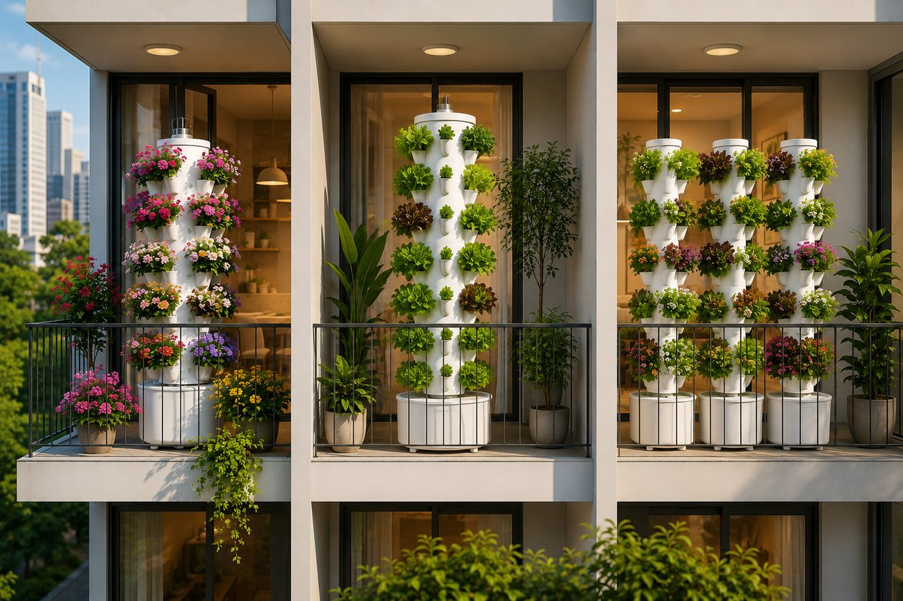
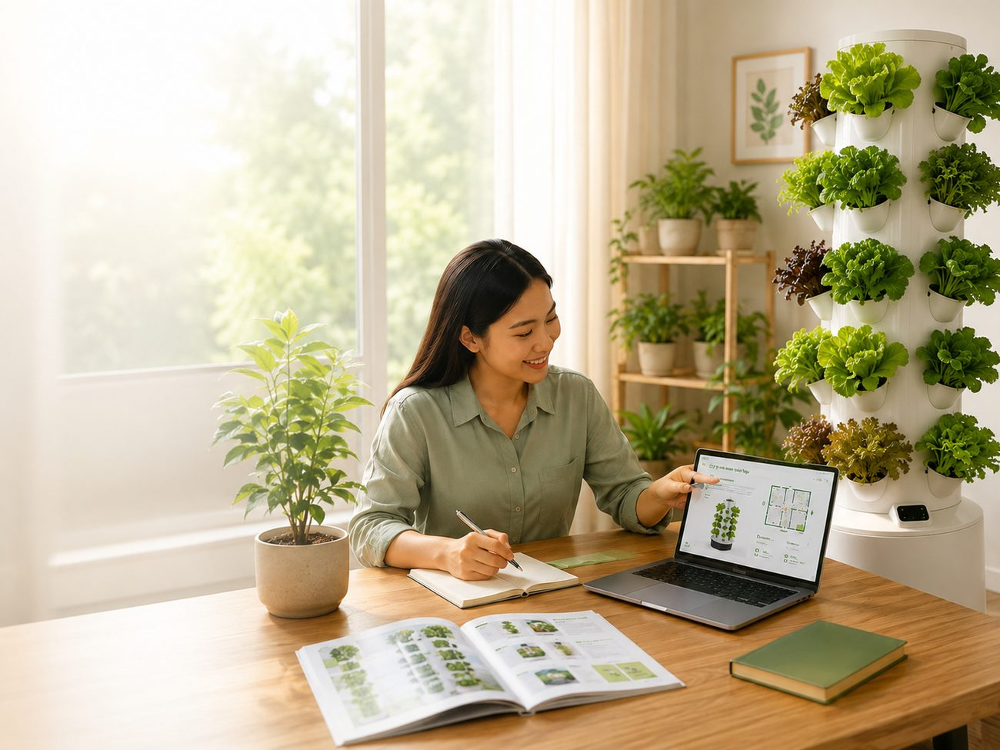
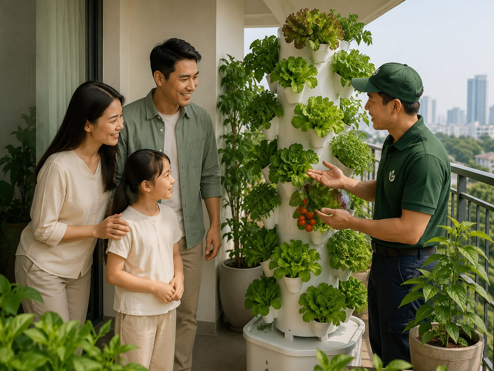

Kiến thức cơ bản
Kiến thức cơ bảnKhí canh là gì? Nguyên lý hoạt động cơ bản
Tìm hiểu cách rễ cây nhận dung dịch dinh dưỡng qua sương và những thành phần chính của một hệ khí canh.
Nội dung tham khảo giúp bạn hiểu, chọn và chăm sóc hệ thống Aeroponics tại nhà.
Các bài viết dưới đây là nội dung mẫu dành cho website VƯỜN PHỐ, không phải bài đăng chính thức có ngày hoặc tác giả xác thực.
Nội dung tham khảo: Thông tin kỹ thuật cần được đối chiếu với hướng dẫn của nhà cung cấp và loại thiết bị cụ thể trước khi áp dụng.
Kiến thức cơ bảnTìm hiểu cách rễ cây nhận dung dịch dinh dưỡng qua sương và những thành phần chính của một hệ khí canh.

Kiến thức cơ bảnSo sánh cách đưa nước và dinh dưỡng tới rễ, yêu cầu thiết bị và tiêu chí chọn mô hình phù hợp.
 Lựa chọn hệ thống
Lựa chọn hệ thốngNhững câu hỏi nên trả lời về diện tích, vị trí, số lỗ trồng và thói quen chăm sóc trước khi chọn kit.

Lựa chọn hệ thốngGợi ý cách bắt đầu từ nhóm cây có chu kỳ và kích thước phù hợp, đồng thời lưu ý việc kiểm tra từng giống.
 Chăm sóc & bảo trì
Chăm sóc & bảo trìDanh sách quan sát hằng ngày về cây, rễ, dung dịch, bơm và đầu phun mà người mới nên hình thành.

Chăm sóc & bảo trìCác điểm cần kiểm tra khi vệ sinh bồn, đường ống, béc phun và thiết bị trước khi hệ thống hoạt động lại.
Chưa có bài viết trong danh mục này.
Gửi thông tin không gian và mục tiêu trồng rau để VƯỜN PHỐ đề xuất mô hình phù hợp.